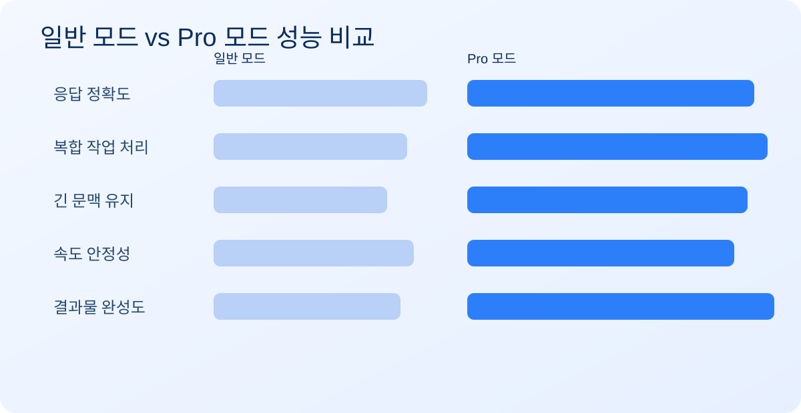
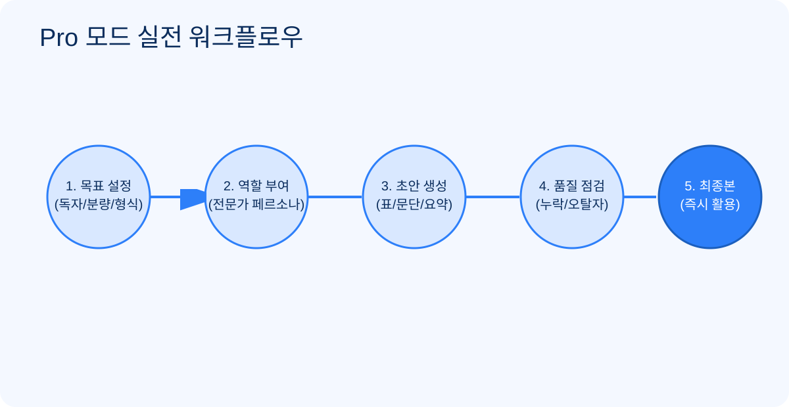

<!doctype html><html lang='ko'><head><meta charset='utf-8'><title>render</title>
<style>
body{margin:0;background:#eef4ff;font-family:'Noto Sans KR','Malgun Gothic',sans-serif}
.page{width:1240px;height:1754px;margin:0 auto;background:white;position:relative;overflow:hidden}
.cover{background:linear-gradient(140deg,#0b2d5c,#1c5fb8);color:#fff;padding:180px 110px}
.badge{display:inline-block;border:1px solid rgba(255,255,255,.5);padding:8px 14px;border-radius:999px;font-size:22px}
h1{font-size:82px;line-height:1.2;margin:30px 0}.sub{font-size:34px}.author{position:absolute;left:110px;bottom:120px;font-size:24px}
.content{padding:90px 90px;color:#123}
h2{font-size:52px;color:#0f3d79;margin:0 0 20px;border-left:12px solid #2d7ff9;padding-left:16px}
p,li,td,th{font-size:24px;line-height:1.45} table{width:100%;border-collapse:collapse}th,td{border:1px solid #bcd5ff;padding:10px}th{background:#eaf3ff}
.card{border:1px solid #c8dcff;background:#f7fbff;border-radius:16px;padding:14px;margin-bottom:12px}
img{width:100%;border:1px solid #bfd6ff;border-radius:14px}
small{font-size:20px;color:#4b5f79}
</style></head><body>
<div id='root'></div>
<script>
const p=new URLSearchParams(location.search).get('p')||'1';
const root=document.getElementById('root');
const pages={
'1':`<section class='page cover'><span class='badge'>2026 실전 가이드 · 초보자용</span><h1>ChatGPT Pro<br>결제자 지침서</h1><p class='sub'>일반 모드와 Pro의 차이부터, 바로 써먹는 디테일 사용법까지</p><p class='author'>작성: AI 활용 실무 가이드팀</p></section>`,
'2':`<section class='page content'><h2>1. 일반 모드 vs Pro 모드</h2><table><tr><th>구분</th><th>일반</th><th>Pro</th><th>체감</th></tr><tr><td>응답 품질</td><td>기본 답변</td><td>정교한 추론</td><td>보고서 완성도↑</td></tr><tr><td>혼잡 시간대</td><td>지연 가능</td><td>상대적 안정</td><td>마감 대응 유리</td></tr><tr><td>고급 기능</td><td>일부 제한</td><td>넓은 접근</td><td>복합 작업 가능</td></tr><tr><td>맥락 유지</td><td>이탈 가능</td><td>긴 대화 안정</td><td>반복수정 효율↑</td></tr></table><div style='height:12px'></div><small>도표 1. 실사용 효율 비교</small></section>`,
'3':`<section class='page content'><h2>2. Pro 모드의 실제 이점</h2><div class='card'><b>① 결과물 품질 향상</b><br>목차·핵심 메시지·실행안까지 구조화된 출력 확보.</div><div class='card'><b>② 반복 작업 자동화</b><br>프롬프트 템플릿으로 메일·회의록·콘텐츠 초안 속도 개선.</div><div class='card'><b>③ 복합 요청 처리</b><br>요약+표+대본+체크리스트를 한 번에 생성.</div><div class='card'><b>④ 실수 감소</b><br>형식 누락, 톤 불일치, 항목 빠짐 감소.</div><p><b>초보자 필수 프롬프트:</b> 역할 지정 → 결과 형식 지정 → 제약 조건 추가 → 자체점검 요청</p><small>도표 2. 5단계 워크플로우</small></section>`,
'4':`<section class='page content'><h2>3. 반드시 알아야 하는 기능</h2><p><b>A. 대화 관리:</b> 주제별 대화방 분리, 첫 메시지에 목표/대상/톤/금지사항 명시.</p><p><b>B. 품질 향상:</b> Before/After 교정, 평가기준(정확성·명확성·실행성·톤) 지정, 3단계 재작성.</p><p><b>C. 실수 방지 체크:</b></p><ul><li>대상 독자 레벨 명시</li><li>분량·형식 지정</li><li>금지사항 명시</li><li>최종 점검 요청</li></ul><div class='card' style='background:linear-gradient(145deg,#ecf4ff,#f8fbff)'><b>한 줄 요약</b><br>Pro의 핵심은 “좋은 답을 더 빨리”가 아니라, <b>실무급 결과를 일관되게 재현</b>하는 것입니다.</div><p style='margin-top:30px'><b>권장 사용 루틴</b><br>매일 1개 업무를 Pro로 처리하고, 잘 나온 프롬프트를 템플릿화하여 개인 라이브러리로 축적하세요.</p></section>`
};
root.innerHTML=pages[p];
</script></body></html>
